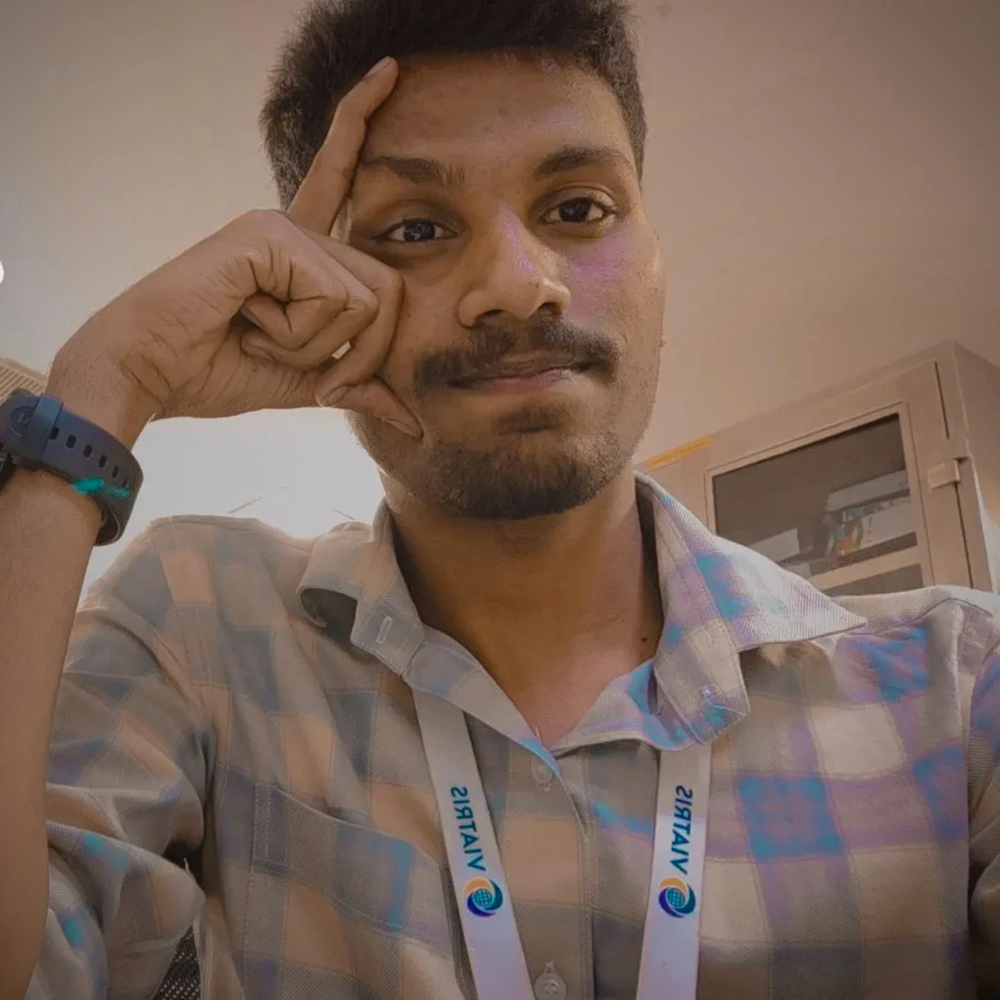

< Gobi />
Hari haran A
QA-QMS
| Backend Devloper
Resume
|
Projects
|
Contact

Hello
A Bit About Me
"Quality-focused pharma QMS expert with backend
#Java development passion
. Proficient in TrackWise, MES, Spring Boot & Docker. Bridging domain knowledge with tech to solve real-world problems."
Resume
Projects
Contact